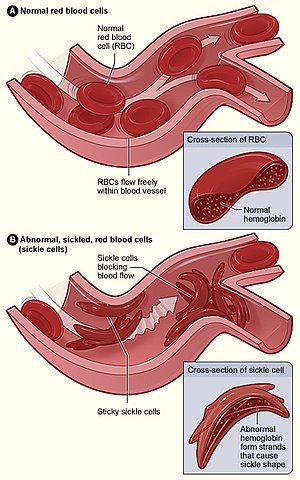
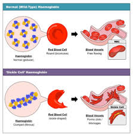

The strange immunity of sickle cell anemics to malaria
TOPICS: Epidemiology, Sociology

Sickle cell anemia is amn inherited erythrocyte disorder where there aren't enough healthy erythrocyes to carry oxygen throughout your body. This can lead to pain and has claimed numerous lives. It involves the curvature of some red blood cells due to abnormal hemoglobin that has resulted from the inheritance of 2 faulty copies of the gene for oxygen-carrying protein hemoglobin.
Erythrocytes are round and can move easily through vessels by default. With SCA, erythrocytes are shaped like sickles or crescent moons, that can get stuck in small blood vessels, resulting in stroke, slowed blood flow, and ischemia.
The reason for this sicle cell anemia is how hemoglobin is structured in the cells. Hemoglobin is separated by default, allowing ease of oxygen flow. SCA erythrocytes contain strands of hemoglobin: some fibers that can cause elongated cells!
SCA, despite its adverse effects, has a very interesting advantage: resistance to malaria. Malaria is a disease from a parasite that causes fevers, chills, and flu-like illness. The reason is not fully known, but it can be inferred that malaria cannot thrive in affected erythrocytes.
How is sociology related?
Malaria-inhabiting mosquitos are prevalent in Central Africa, especially the equatorial ones. The arid conditions and low qualities of life in poor-developed countries give breeding grounds for mosquitoes. According to a WHO aggenda in 2006, sickle-cell anemia is common to about 10% to 40%, or at least the sickle cell disease. We can infer that these people have a resistance to malaria, but suffer from this debilitating disease. However, Malaria continues to be a health problem there, and it is adamant to establish health centres for the people in need of such assistance.
Sources
TheWHO agenda on sickle-cell anemia